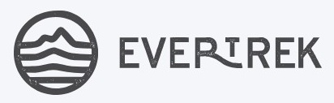
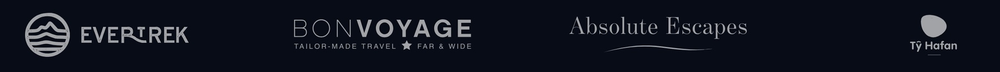

How a founder-led adventure brand used Meta to grow from 14p leads to a £3m+ business whose customers stayed even when the trips stopped. What worked, what didn't, and what you can steal for your own brand.
Most case studies are an agency writing about somebody else's business. This isn't that. EverTrek is my company. Every pound in here came out of our bank account, and every lead had to turn into a real person standing at the start of a real trek before any of it counted.
When I started EverTrek in 2016 I didn't have a marketing team. I was the marketing team. I built the website, wrote the emails, made the ads, built the funnels and then sat there wondering where the bloody bookings were.
Ten years later, I think the most useful thing I can share isn't a clever targeting trick. It's how the ads and the brand ended up working together, and why that turned out to matter far more than any single campaign. So here's the story, in roughly the order we learned it, with the bits I think you can genuinely use pulled out along the way.
Andy
Cost of a Facebook lead in 2016, when it was very easy to think you were a genius.
The adventure travel business EverTrek grew into from a one-man startup.
Of customers offered a postponement during COVID stayed, through roughly 20 months of no trips.
Cost per lead held flat while monthly Meta spend went from £4k to £14k.
In bookings from one Facebook lead that most reports would have written off.
None of those numbers came from a single ad. They came from Meta finding the right people and the brand giving them a reason to stay. That's what the rest of this document is about.
From a kitchen-table startup to a brand people would rather stick with than shop around from. Four chapters, roughly in order.
This was 2016, a wonderful time to convince yourself you were a Facebook Ads genius. Leads cost about 14p, a 1% Lookalike Audience felt like magic, and we all thought Messenger bots were going to replace email. (OK, I did a little.)
The ads worked, in the sense that Ads Manager was full of lovely numbers. CTR up. CPC down. Engagement flying. But it was my money, and I wasn't really interested in CTR. I wanted to know what came out the other side.
That question shaped everything after it. Not "what did Facebook say worked?" but "what actually made someone book a trip?" I've been trying to answer it ever since.
A lead is the start of a conversation, not the end of the job. If you only measure what happens inside the ad platform, you'll optimise for whatever's cheapest to produce, which is rarely the thing that pays the wages.
Alongside the ads, we just kept turning up. Regular Facebook Lives. A community group where people asked questions and, increasingly, answered each other's. Over time customers started calling themselves EverTrekkers.
Lives, Q&As, Tuesday Tune-Ins and podcasts. Plenty of rambling mixed in with the useful bits.
A community where people who'd never met swapped training tips and calmed each other's nerves.
The Yeti Pose. Neck buffs. "Andy and Dave bingo" in the comments. Nobody planned these.
Real answers about fitness, altitude and kit, given freely, whether or not anyone was about to book.
"Just showing up, having a chat and trying to be useful. Turns out that might have been marketing too."
In the early years there wasn't much between someone paying a deposit and turning up at the airport. Then, around 2018, feedback from an Everest Base Camp group told us people didn't feel prepared enough.
Rather than getting defensive, we built a personalised Trip Planner. It ended up about 80 pages long, with the customer's name on it, fitness plans, maps and practical advice. People carried it, scribbled in it, photographed it and shared it online.
The lesson wasn't "give people more information". The planner changed the relationship. We stopped being a trip provider and became an adventure partner.
Preparation emails · Personalised videos · The Trip Planner · An app with maps and countdowns · Ask a Yeti · Timed notifications · Arrival messages · A members' area · Training content · Tuesday Tune-In · Podcasts · The community
None of it came from a master plan. Together it became the glue between EverTrek and the customer, and it was still there when the trips weren't.
I was on a ski trip in Morzine when it became real. Within hours the team were calling customers to tell them they couldn't travel. I'll be honest, I had a proper wobble. If everyone wanted their money back, would EverTrek still exist? We couldn't promise anyone a date. We could only promise how we'd behave.
So we stripped out cancellation and deferral fees, made it simple to keep your trip, and within the first week started live Q&As on Facebook. No formal updates from a faceless company, just us, stuck at home like everyone else. For roughly 20 months we couldn't take anyone trekking. More than 95% of the customers offered that route stayed.
COVID didn't create the loyalty. It revealed it.

Years of trust deposits change what scaling feels like. Between June and November we took monthly Meta spend from £4k to £14k. Normally that's where costs start running away from you. They didn't.
June to November
Up from 800–1,000 a month
Held flat while spend tripled
Organic and paid search climbed alongside it: volume, leads and conversions all up. Meta captured the interest. Search converted the intent.
EverTrek account data, June to November. Search and organic movements are directional, not a claim of causation.
Downloads one of our guides. Doesn't buy. Doesn't speak to sales. Carries on with their life.
Gets the emails. Sees the content. Has a look around. Nothing in any report.
A second download triggers our sales team. Somebody actually notices.
A human conversation. Questions answered. No hard sell.
Nearly £18k in bookings from a lead that looked dead for months.
Now, it's one customer journey, and I'm not going to build a strategy around one example. Facebook doesn't get to stick £18k in its attribution column and take the afternoon off. But it shows how messy buying really is. There's a big difference between a bad lead and a good lead that isn't ready yet. Most reporting can't tell them apart.
"Someone might first discover us through a Meta ad, then Google EverTrek a few weeks later, read a blog, watch a video, come back through Search and finally book.
That's why good written and visual creative has an impact way beyond the platform it originally appeared on."
Andy
Four things from the EverTrek story that work in any business where people think before they buy. Each one ends with something you can do on Monday morning.
Most ads are full of "we offer", "we can", "we're the best". The customer is Luke Skywalker. Your job is to be the experienced guide who helps them get where they're trying to go. On Meta, that means your creative has four jobs, and most brands only ever do the first one.
Make the outcome, and the person they'll become, feel real. "I'd bloody love to do that."
Answer the scary questions early: fitness, safety, cost, "is this for someone like me?"
Let real customers and the community make the risk feel survivable.
Carry the same hooks into search ads, landing pages and sales calls so the story joins up.
Line up your live Meta ads and label each one with its job. Whichever of the four has nobody doing it is your next creative brief.
Founder-led brands have one unfair advantage that big companies can't buy: a real person. The Lives, the rambling Q&As, the in-jokes, the personalised video that set us apart from the four or five other companies someone was considering. None of it showed up as a conversion. All of it showed up when we needed it.
Here's the uncomfortable bit. You can't manufacture loyalty during a crisis. You can only make withdrawals from trust you've already deposited. Every useful post, every honest answer, every "not yet, train a bit longer first" is a deposit. And on Meta, that same content warms the audiences your prospecting reaches.
If Tom Cruise emailed your business, you'd use his name, make time, ask questions and make him feel important. What would it cost to give your ordinary customers a slice of that? Personal doesn't have to mean expensive.
Book one recurring slot where the founder shows up on camera, answering real customer questions. Run the best clips as Meta ads to warm audiences.
The £18k lead taught us this the expensive way. If your sale happens beyond the click, the ad account only sees the first step. You need to watch the whole route, and give it long enough to play out.
New audiences arrive who've never heard of you. Efficiency dips. The report looks worse, and someone suggests turning it off.
They research, compare, come back and buy. In our wider research, around a quarter of accounts saw exactly this three to four weeks later.
Pull your last 20 customers and work out how long it took each one to go from first touch to purchase. That number, not Meta's default, is your judging window.
Meta says it did it. Google says it did it. GA4 has another idea entirely. As the business owner, I don't really care who gets the trophy. I just want to know what helped us sell the trip. So we stopped asking one metric to answer three different questions.
Put weekly Meta spend and branded search volume on the same chart for the last six months. If they move together, you've got a conversation worth having before anyone cuts prospecting.
A soft month. Prospecting looks like the weakest line on the sheet.
Sensible on paper. Search is efficient and closest to revenue.
Four to eight weeks later. Nobody connects it to step two.
Fewer new people entering the journey. Same spend, smaller pool.
It hasn't. Fewer people were being given a reason to search.
Every step makes sense on its own. The damage only shows up in the gap between them, and channel-by-channel reporting is built to hide exactly that gap. If EverTrek had made this call in a soft month, I think we'd have quietly starved the very thing that made scaling work.
Tick the ones that are true today. Be honest, nobody's watching.
If you ticked fewer than five, you're probably leaving demand on the table, and you're in very good company. It's exactly where most of the businesses we speak to start.
After ten years of tinkering with all of this inside EverTrek, other founders started asking us to look at theirs. That became The Ads Yeti. We work with businesses where the sale happens beyond the click, and we judge ourselves the same way I judge EverTrek: did it help you sell more, profitably?
We start from the commercial target, then build the channel plan towards it.
Channel, demand and commercial signals, read together.
What people see early shapes what they search for later.
Tests judged on your real purchase lag, not a platform default.

If you're already spending on Meta and can't quite explain what it's doing for the business, I'll look at your account the way I look at EverTrek's: from the ad, through the lead, all the way to revenue.
Where people come in, where they stall, and where you're losing them.
Whether Meta looks like it's creating demand that gets captured elsewhere.
The one change I'd make first, with a sensible window to judge it.
Meta spend, leads and cost per lead, June to November. Search and organic movements are directional.
COVID postponement retention (95%+ of customers offered the option) and the £18k customer journey. One journey is an example, not a trend.
Andy's recollection of early EverTrek Facebook campaigns. Approximate, and a very different market to today.
Weekly Meta and Google Ads data from UK brands, anonymised. Full detail in our Connected Demand briefing.
Correlation shows that two measures moved together over a period. It doesn't isolate creative, offer, seasonality, pricing or competitor effects, and isn't a claim of causation. Use it to ask sharper questions, not to hand out trophies.